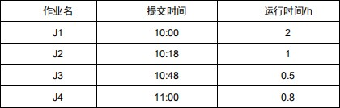
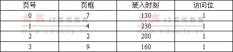
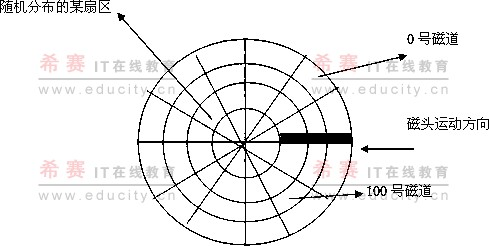
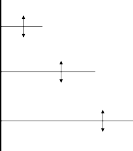

计算题
若程序 A 和 B 单独执行时分别用 TA 和 TB，TA=1h，TB=1.5h，其中处理器工作时间分别为 TA=18min，TB=27min。如果采用多道程序设计方法，让 A，B 并行工作，假定处理器利用率达到 50%，另加 15min 系统开销，请问系统效率提高百分之几？
答：
（18+27）/0.5=90
（（60+90）-（90+15））/(60+90)=0.3 0.3*100%=30%
在操作系统中引入并发可以提高系统效率，若有两个程序 A 和 B，A 程序执行时所做的工作按次序需要用 cpu：10s，设备 1：5s，cpu：5s，设备 2：10s，cpu： 10s；程序 B 执行时所做的工作按次序需要用设备 1：10s，cpu：10s，设备 2：
5s，cpu：5s，设备 2：10s。如果在顺序环境下执行两个程序，则 cpu 的利用率为多少？；如果在并发环境下执行两个程序，则 cpu 的利用率为多少？
答：如果 A、B 顺序执行，根据顺序环境的特点，程序 A 结束之后程序 B 才可以开始运行， 因此总的运行时间应是两个程序运行所需实际时间的总和，即 (10+5+5+10+10)+(10+10+5+5+10)=80 秒 再 计 算 CPU 运 行 时 间 ：
(10+5+10)+(10+5)=40 秒，因此 CPU 利用率为 40 秒/80 秒=50%。如果并发执行，则在程序 A 不使用 CPU 时，B 可以占用 CPU，与 A 对其他设备的使用同步进行。程序 A、B 是同时进行着，也是同时结束的，即运行时间重叠。因此可得，程序运行所需时间为 45 秒，而 CPU 运行时间为 40 秒，由此可得 CPU 利用率为 40 秒
/45 秒=89%。
设某计算机系统有一个 cpu、一台输入设备、一台打印机。现有两个进程同时进入就绪状态，且进程 A 先得到 cpu 运行，进程 B 后运行。进程 A 的运行轨迹为：计算 50ms，打印信息 100ms，再计算 50ms，打印信息 100ms。进程 B 的运行轨迹为：计算 50ms，输入数据 80ms，再计算 100ms，结束。试画出它们的时序关系图（可用甘特图）并说明：（1）运行过程中，cpu 有无空闲等待？计算 cpu利用率。（2）进程 A 和 B 运行过程中有无等待现象？
答：CPU 有空闲时间，在开始后的 100 毫秒～150 毫秒之间，此时 A 在打印，B在输出。CPU 利用率为(300-50)/300=83.3%。
内存容量为 64 KB，页面大小为 1KB，对一个 4 页大的作业，其 0、1、2、3页分别被分配到内存的 2、4、6、7 块中。将 10 进制的逻辑地址为 1023、2500、 3500、4500 变换为物理地址？
(1) 1023/1024=0……1023 页号为 0，页内偏移 1023，物理地址 2*1024+1023=3071 (2) 2500/1024=2……452 页号为 2，页内偏移 452，物理地址 6*1024+452=6596 (3)3500/1024=3……428 页号为 3，页内偏移 428，物理地址 7*1024+428=7596
(4) 4500/1024=4 因为：页号不小于页表长度 所以：越界
假定某磁盘共有 200 个柱面，编号为 0-199，如果在为访问 143 号柱面的请求
者服务后，当前正在为访问 125 号柱面的请求服务，同时有若干请求者在等待服务，它们每次要访问的柱面号为 86，140，91，177，94，150，102，170，130请回答下列问题：1）.分别用先来先服务算法，最短寻找时间优先算法、电梯调度算法来确定实际的服务次序及移动臂需移动的距离。
答：1）.先来先服务法：125→86→140→91→177→94→150→102→170→130=523
（3 分）
最短寻找时间算法： 125→130→140→150→170→177→102→94→91→86=143
（3 分）
电梯调度算法：125→102→94→91→86→130→140→150→170→177=130
假定一个盘组共有 100 个住面，每个柱面有 16 个磁道，每个磁道分成 4 个扇区，问：
整个磁盘空间共有多少个物理块？
若用字长为 32 位的单元来构造位示图，则共需要多少个字？
位示图中第 18 个字的第 16 位对应的块号是多少？答：（1）整个磁盘空间的物理块数为 4*16*100=6400 个。
（2）位示图为 6400 个比特位，若用字长为 32 位的单元来构造位示图，则需要
6400/32=200 个字。
（3）位示图中第 18 个字的第 16 位对应的物理块号为 32*（18-1）+（16-1）=559。
7.假定有如下页面访问序列：1，2，3，4，2，1，5，6，2，1，如果现有 4 个物理块供使用，当使用 FIFO、LRU 页面转换算法时会出现多少次缺页中断。
注意所给定的页初始时均未放入内存的物理块中。
FIFO
页面走向 | 1 | 2 | 3 | 4 | 2 | 1 | 5 | 6 | 2 | 1 |
| 1 | 1 | 1 | 1 | 1 | 1 | 2 | 3 | 4 | 5 |
|
| 2 | 2 | 2 | 2 | 2 | 3 | 4 | 5 | 6 |
|
|
| 3 | 3 | 3 | 3 | 4 | 5 | 6 | 2 |
|
|
|
| 4 | 4 | 4 | 5 | 6 | 2 | 1 |
缺页标志 | √ | √ | √ | √ |
|
| √ | √ | √ | √ |
| 1 分 |
|
| 1 分 | 1 分 | 1 分 | 1 分 |
LRU
页面走向 | 1 | 2 | 3 | 4 | 2 | 1 | 5 | 6 | 2 | 1 |
| 1 | 1 | 1 | 1 | 1 | 3 | 4 | 2 | 1 | 5 |
|
| 2 | 2 | 2 | 3 | 4 | 2 | 1 | 5 | 6 |
|
|
| 3 | 3 | 4 | 2 | 1 | 5 | 6 | 2 |
|
|
|
| 4 | 2 | 1 | 5 | 6 | 2 | 1 |
缺页标志 | √ | √ | √ | √ |
|
| √ | √ |
|
|
|
| 1 分 | 1 分 | 1 分 |
|
| 1 分 | 1 分 |
|
|
8.对于如下所示的段表，请将逻辑地址（0，137），（1，4000），（2，3600），
（5，230）转换成物理地址。
段号 | 内存地址 | 段长 |
0 | 50K | 10 KB |
1 | 60K | 3 KB |
2 | 70K | 5 KB |
3 | 120K | 8 KB |
4 | 150K | 4 KB |
段号 0 小于段表长 5，故段号合法；由段表的第 0 项可知：段长为 10KB，由于段内地址为 137，小于段长 10KB，故段内地址也是合法的，因此可得出对应
的物理地址为 50KB+137=51337。
段号 1 小于段表长，故段号合法；由段表的第 1 项可知：段长为 3KB，经检查，段内地址 4000 超过段长 3KB，因此产生越界中断。
段号 2 小于段表长，故段号合法；由段表的第 2 项可知：段长为 5KB，由于段内地址为 3600，小于段长 5KB，故段内地址也是合法的，因此可得出对应的物理地址为 70KB+3600=75280。
段号 5 等于段表长，故段号不合法，产生越界中断。
若一个硬盘上共有 5000 个磁盘块可用于存储信息，若由字长为 32 位的字构造位示图，请问构成的位示图需要多少个字？某文件所占的盘块块号分别为 12、 16、23 和 37，若文件被删除后，位示图如何修改？
位示图共需（5000/32）=157 个字，另加一个等级空闲块，共 158 个字。根据要回收的磁盘物理块号计算得到字号和位号分别为：
12 对应的字号和位号分别为 0 字 12 位，
16 对应的字号和位号分别为 0 字 16 位，
23 对应的字号和位号分别为 0 字 23 位，
37 对应的字号和位号分别为 1 字 5 位，则当文件被删除时：
只需将 0 字 12 位、16 位、23 位及 1 字 5 位共四个位置清 0，同时在将空闲块总
数加 4 即可。
下表给出了 4 个作业 J1、J2、J3、J4 的提交时间、运行时间，试分别采用
FCFS、SJF 和 HRRF 调度算法，求出在各种作业调度算法下作业的平均周转时间。

采用 FCFS 作业调度算法时，
作业的平均周转时间 = （2+2.7+2.7+3.3）h/4=2.675h采用 SJF 作业调度算法时，
作业的平均周转时间 = （2+4+1.7+2.3）h/4=2.5h采用 HRRF 作业调度算法时，
作业的平均周转时间 = （2+3.2+1.7+3.3）h/4=2.55h
有 4 个进程 P1、P2、P3、P4，进入就绪队列的先后次序为 P1、P2、P3、P4，它们的优先级和需要的处理时间如表所示。假定这 4 个进程执行过程中不会发生等待事件，忽略进程调度等所花费的时间，从某个时刻开始进程调度，请回答问题：
采用“先来先服务”调度算法，计算平均周转时间和平均带权周转时间；
采用“非抢占式的优先级”（优先级数越小，优先权越高）调度算法，计算平均周转时间和平均带权周转时间；
采用“时间片轮转”（时间片为 5）调度算法，计算平均周转时间和平均带权周转时间；
答案：
（1）周转时间：P1:8; P2:14; P3:36; P4:40;平均周转时间 24.5；
加权周转时间：P1:1; P2:2.33; P3:1.64; P4:10;平均加权周转时间： 3.74；
（2）周转时间：P1:14; P2:6; P3:40; P4:18;平均周转时间 19.5；
加权周转时间：P1:1.75; P2:1; P3:1.82; P4:4.5;平均加权周转时间： 2.27；
（3）周转时间：P1:22; P2:23; P3:40; P4:19;平均周转时间 26；
加权周转时间：P1:2.75; P2:3.83; P3:1.82; P4:4.75;平均加权周转时间：3.29；
有 5 个进程 P1，P2,P3，P4，P5 它们同时依次进入就绪队列，它们的优先数和所需要的处理器时间如表所示
进程 | 处理器时间 | 优先数 |
P1 | 10 | 3 |
P2 | 1 | 1 |
P3 | 2 | 3 |
P4 | 1 | 4 |
P5 | 5 | 2 |
忽略进行调度等所花费的时间，请回答下列问题
、写出分别采用“先来先服务”和“非抢占式的优先数”调度算法选中进程执行的顺序。
、分别计算出上述两种算法使进程在就绪队列中的等待时间以及两种算法下的平均等待时间。
解：
采用先来先服务法的执行顺序是 P1→P2→P3→P4→P5。这是由其进入的顺序所确定的。
采用“非抢占式的优先数”调度算法时，各进程的执行顺序是 P1→P4→P3→P5→P2
如表所示：先来先服务法：
进程 | 等待时间 | 运行时间 |
P1 | 0 | 10 |
P2 | 10 | 1 |
P3 | 11 | 2 |
P4 | 13 | 1 |
P5 | 14 | 5 |
平均等待时间 | (0+10+11+13+14)/5=9.6 |
非抢占式的优先数调度算法：
进程 | 等待时间 | 运行时间 |
P1 | 0 | 10 |
P4 | 10 | 1 |
P3 | 11 | 2 |
P5 | 13 | 5 |
P2 | 18 | 1 |
平均等待时间 | (0+10+11+13+18)/5=10.4 |
当前系统中出现表中资源分配情况。
| Allocation | Need | Available |
P0 | 0 | 0 | 3 | 2 | 0 | 0 | 1 | 2 | 1 | 6 | 2 | 2 |
P1 | 1 | 0 | 0 | 0 | 1 | 7 | 5 | 0 |
P2 | 1 | 3 | 5 | 4 | 2 | 3 | 5 | 6 |
P3 | 0 | 3 | 3 | 2 | 0 | 6 | 5 | 2 |
P4 | 0 | 0 | 1 | 4 | 0 | 6 | 5 | 6 |
利用银行家算法，试问：
该状态是否安全？
如果进程 P2 提出资源请求（1，2，2，2）后，系统能否将资源分配给它？
一旦系统进入不安全状态，是否必然导致系统进入死锁状态，为什么？答：
由于能够找到一个进程执行的安全序列{P0，P3，P1，P4，P2}，所以该状态安全。
P2 提出请求（1，2，2，2），按银行家算法进行检查： Request2（1，2，2，2）<=Need2（2，3，5，6） Request2（1，2，2，2）<=Available（1，6，2，2）
分配并修改相应数据结构，由此形成的资源分配情况
再利用安全算法检查系统是否安全，可利用资源 Available（0，4，0，0）已不能满足任何进程的需要，故系统进入不安全状态，此时系统不能将资源分配给 P2。
不一定。一旦系统进入不安全状态，并不会马上导致系统进入死锁状态，只有当进程又提出新的资源分配请求，而系统又不能满足时，才会导致系统进入死锁状态。
桌上有一空盘，允许存放一只水果。爸爸可向盘中放苹果，也可以向盘中放橘子，儿子专等吃盘中的橘子，女儿专等吃盘中的苹果。规定当盘中空时，一次只能放一只水果供吃者使用，请用信号量及 P、V 操作描述爸爸、儿子、女儿三个进程的工作过程。（10 分）
解：
设 S 表示盘子是否为空，为互斥，S=1 So 表示盘中是否有橘子，So=0
Sa 表示盘中是否有苹果，Sa=0
father() // 父亲
{ p(S);
将水果放入盘中
if(放入是橘子) v(So); else v(Sa);
}
son() // 儿子
{
p(So);
从盘中取橘子；
v(S);
吃橘子；
}
daughter() // 女儿
{
p(Sa);
从盘中取苹果；
v(S);
吃苹果；
}
设某计算机的逻辑地址空间和物理地址空间均为 64KB，按字节编址。若某进程最多需要 6 页（Page）数据存储空间，页的大小为 1KB，操作系统采用固定分配局部置换策略为此进程分配 4 个页框（Page Frame）。

当该进程执行到时刻 260 时，要访问逻辑地址为 17CAH 的数据。请回答下列问题：
该逻辑地址对应的页号是多少？
若采用先进先出（FIFO）转换算法，该逻辑地址对应的物理地址是多少？要求给出计算过程。
若采用时钟（Clock）转换算法，该逻辑地址对应的物理地址是多少？要求给出计算过程。（设搜索下一页的指针沿顺时针方向移动，且当前指向 2 号页框，示意图如下）

解答：
17CAH=(0001 0111 1100 1010)2
页大小为 1K，所以页内偏移地址为 10 位，于是前 6 位是页号，所以第一问的解为：5；
FIFO，则被转换的页面所在页框为 7，所以对应的物理地址为(0001 1111
1100 1010)2=1FCAH
Clock，则被转换的页面所在页框为 2，所以对应的物理地址为(0000 1011
1100 1010)2=0BCAH
假设计算机系统采用 CSCAN（循环扫描）磁盘调度策略，使用 2KB 的内存空间记录 16384 个磁盘块的空闭状态。（2010 年考研计算机专业基础综合）
请说明在上述条件下如何进行磁盘块空闲状态管理。
设某单面磁盘旋转速度为每分钟 6000 转，每个磁道有 100 个扇区，相临磁道间的平均移动时间为 1ms。
若在某时刻，磁头位于 100 号磁道处，并沿着磁道号增大的方向移动（如下图所
示），磁道号请求队列为 50，90，30，120，对请求队列中的每个磁道需读取 1
个随机分布的扇区，则读完这个扇区点共需要多少时间？要求给出计算过程。

解答：
使用位示图法，每一位表示一个磁盘快是否空闲；
每分钟 6000 转，转 1 圈需要 0.01 秒，通过一个扇区需要 0.0001 秒。
100-->120：20×1ms（寻道）+0.01×0.2s（寻扇）+0.0001s（读一个扇区）
=20ms+2ms+0.1ms
0-->30：30×1ms（寻道）+0.01×0.2s（寻扇）+0.0001s（读一个扇区）
30-->50：20×1ms（寻道）+0.01×0.2s（寻扇）+0.0001s（读一个扇区）
50-->90：40×1ms（寻道）+0.01×0.2s（寻扇）+0.0001s（读一个扇区） sum=110ms+(2ms+0.1ms)×4=118.4ms
假定盘块的大小为 1KB，硬盘的大小为 500MB，采用显示链接分配方式时，其 FAT 最少需要占用多少存储空间？
共 500MB/1KB=500K 个盘块，为保存最大的盘块号 500K，该 FAT 表至少需要 19位，扩展为半个字节的整数倍后，可知每个 FAT 表项需 20 位，即 2.5 字节。因此，FAT 需占用的空间大小为： 2.5×500KB=1250KlB(取 20 位或 24 位皆可) 18.采用请求分页存储管理时，假设分配给某进程的内存块为 3，请填写采用最佳置换算法时内存的分配情况，并判断是否缺页，计算缺页中断次数。
页面走向 | 1 | 2 | 3 | 4 | 1 | 2 | 5 | 1 | 2 | 3 | 4 | 5 |
内存块 | M0 | 1 | 1 | 1 | 1 |
|
| 1 |
|
| 3 | 3 |
|
M1 |
| 2 | 2 | 2 |
|
| 2 |
|
| 2 | 4 |
|
M2 |
|
| 3 | 4 |
|
| 5 |
|
| 5 | 5 |
|
是否缺页 |
|
|
|
|
|
|
|
|
|
|
|
|
缺页中断次数 7 次。
有三个作业：
作 业 | 到达时间 | 所需 CPU 时间 |
1 | 0.0 | 8 |
2 | 0.4 | 4 |
3 | 1.0 | 1 |
分别采用先来先服务和短作业优先作业调度算法。试问它们的平均周转时间各是什么？你是否还可以给出一种更好的调度算法，使其平均周转时间优于这两种调度算法？
解：（1）采用先来先服务作业调度算法时的实施过程如下。
作 业 | 到达时间 | 所需 CPU 时 间 | 开始时间 | 完成时间 | 周转时间 |
1 | 0.0 | 8 | 0.0 | 8.0 | 8.0 |
2 | 0.4 | 4 | 8.0 | 12.0 | 11.6 |
3 | 1.0 | 1 | 12.0 | 13.0 | 12.0 |
这时，作业的调度顺序是 1→2→3。其平均周转时间为：
（8 + 11.6 + 12）/ 3 = 10.53
采用短作业优先作业调度算法时的实施过程如下。
作 业 | 到达时间 | 所需 CPU 时 间 | 开始时间 | 完成时间 | 周转时间 |
1 | 0.0 | 8 | 0.0 | 8.0 | 8.0 |
3 | 1.0 | 1 | 8.0 | 9.0 | 8.0 |
2 | 0.4 | 4 | 9.0 | 13.0 | 12.6 |
这里要注意，在作业 1 运行完毕进行作业调度时，作业 2 和 3 都已经到达。由于
是实行短作业优先作业调度算法，因此先调度作业 3 运行，最后调度作业 2 运行。
所以，这时的作业调度顺序是 1→3→2。其平均周转时间为：（8+8+12.6）/3=9.53
还可以有更好的作业调度算法，使其平均周转时间优于这两种调度算法。例如，如果知道在作业 1 后面会来两个短作业，那么作业 1 到达后，先不投入运行。而是等所有作业到齐后，再按照短作业优先作业调度算法进行调度，具体实施过程如下。
作 业 | 到达时间 | 所需 CPU 时 间 | 开始时间 | 完成时间 | 周转时间 |
3 | 1.0 | 1 | 1.0 | 2.0 | 1.0 |
2 | 0.4 | 4 | 2.0 | 6.0 | 5.6 |
1 | 0.0 | 8 | 6.0 | 14.0 | 14.0 |
这时的作业调度顺序是 3→2→1。其平均周转时间为：
（1 + 5.6 + 14）/ 3 = 6.87
设有一组作业，它们的到达时间和所需 CPU 时间如下所示。
作业号 | 到达时间 | 所需 CPU 时间 |
1 | 9:00 | 70 分钟 |
2 | 9:40 | 30 分钟 |
3 | 9:50 | 10 分钟 |
4 | 10:10 | 5 分钟 |
分别采用先来先服务和短作业优先作业调度算法。试问它们的调度顺序、作业周转时间以及平均周转时间各是什么？
解：（1）采用先来先服务作业调度算法时的实施过程如下。
作业号 | 到达时间 | 所需 CPU 时 间 | 开始时间 | 完成时间 | 周转时间 |
1 | 9:00 | 70 分钟 | 9:00 | 10:10 | 70 分钟 |
2 | 9:40 | 30 分钟 | 10:10 | 10:40 | 60 分钟 |
3 | 9:50 | 10 分钟 | 10:40 | 10:50 | 60 分钟 |
4 | 10:10 | 5 分钟 | 10:50 | 10:55 | 45 分钟 |
这时，作业的调度顺序是 1→2→3→4。其平均周转时间为：
（70 + 60 + 60 + 45）/ 4 = 58.75
（2）采用短作业优先作业调度算法时的实施过程如下。
作业号 | 到达时间 | 所需 CPU 时 间 | 开始时间 | 完成时间 | 周转时间 |
1 | 9:00 | 70 分钟 | 9:00 | 10:10 | 70 分钟 |
4 | 10:10 | 5 分钟 | 10:10 | 10:15 | 5 分钟 |
3 | 9:50 | 10 分钟 | 10:15 | 10:25 | 35 分钟 |
2 | 9:40 | 30 分钟 | 10:25 | 10:55 | 75 分钟 |
这时，作业的调度顺序是 1→4→3→2。其平均周转时间为：（70+5+35+75）/4= 46.25
系统内存被划分成 8 块，每块 4KB。某作业的虚拟地址空间共划分成 16 个页面。当前在内存的页与内存块的对应关系如下表所示，未列出的页表示不在内存。
试指出对应于下列虚拟地址的绝对地址：（a）20（b）4100（c）8300
解：（a）虚拟地址 20 对应的页号是 0，页内位移是 20。用 0 去查页表，知道第 0 页现在存放在内存的第 2 块。由于每块的长度是 4KB，所以第 2 块的起始地址为 8192。因此，虚拟地址 20 所对应的绝对地址是：
8192+20=8212
虚拟地址 4100 对应的页号是： 4100/4096=1（“/”是整除运算符）对应的页内位移是：
4100%4096=4（“%”是求余运算符）
用 1 去查页表，知道第 1 页现在存放在内存的第 1 块。第 1 块的起始地址为 4096。
因此，虚拟地址 4100 所对应的绝对地址是：
4096+4=4100
虚拟地址 8300 对应的页号是： 8300/4096=2（“/”是整除运算符） 对应的页内位移是： 8300%4096=108（“%”是求余运算符）
用 2 去查页表，知道第 2 页现在存放在内存的第 6 块。第 6 块的起始地址为
6×4K=24576
因此，虚拟地址 8300 所对应的绝对地址是
24576+108=24684
22.有段表如下所示。已知逻辑地址：（1）[0，430]；（2）[3，400]；（3）[1，
10]；（4）[2，2500]；（5）[4，42]；（6）[1，11]。求它们所对应的物理地址。
段号 | 段长 | 段基址 |
0 | 600 | 219 |
1 | 14 | 2300 |
2 | 100 | 90 |
3 | 580 | 1327 |
4 | 96 | 1954 |
解：（1）物理地址为：219+430=649；（2）物理地址为：1327+400=1727；
（3）物理地址为：2300+10=2310；（4）第 2 段的段长为 100，现在逻辑地址中的段内位移 2500 超出段长，发生越界错；（5）物理地址为：1954+42=1996；（6）物理地址为：2300+11=2311。
23.磁盘请求以 10、22、20、2、40、6、38 柱面的次序到达磁盘驱动器。移动臂移动一个柱面需要 6ms，实行以下磁盘调度算法时，各需要多少总的查找时间？假定磁臂起始时定位于柱面 20。
先来先服务；
最短查找时间优先；
电梯算法（初始由外向里移动）。
解：（a）先来先服务时，调度的顺序是 20→10→22→20→2→40→6→38，总共划过的柱面数是：
10+12+2+18+38+34+32=146
因此，总的查找时间为：146×6=876ms。
最短查找时间优先时，调度的顺序是 20→22→10→6→2→38→40（由于磁臂起始时定位于柱面 20，所以可以把后面第 20 柱面的访问立即进行），总共划过的柱面数是：
2+12+4+4+36+2=60
因此，总的查找时间为：60×6=360ms。
电梯算法（初始由外向里移动）时，调度的顺序是 20→22→38→40→10→ 6→2（由于磁臂起始时定位于柱面 20，所以可以把后面第 20 柱面的访问立即进行），总共划过的柱面数是：
2+16+2+30+4+4=58
因此，总的查找时间为：58×6=348ms。
假定磁盘的移动臂现在处于第 8 柱面。有如下表所示的 6 个 I/O 请求等待访问磁盘，试列出最省时间的 I/O 响应次序。
序 号 | 柱 面 号 | 磁 头 号 | 扇 区 号 |
1 | 9 | 6 | 3 |
2 | 7 | 5 | 6 |
3 | 15 | 20 | 6 |
4 | 9 | 4 | 4 |
5 | 20 | 9 | 5 |
6 | 7 | 15 | 2 |
解：由于移动臂现在处于第 8 柱面，如果按照“先来先服务”调度算法，对这 6个 I/O 的响应次序应该是 8→9→7→15→9→20→7；如果是按照“最短查找时间优先”调度算法，对这 6 个 I/O 的响应次序可以有两种，一是 8→9→7→15→20
（到达 9 时完成 1 和 4 的请求，到达 7 时完成 2 和 6 的请求），二是 8→7→9→
15→20（到达 7 时完成 2 和 6 的请求，到达 9 时完成 1 和 4 的请求）；如果按照 “电梯”调度算法，对这 6 个 I/O 的响应次序可以有两种，一是 8→9→15→20
→7（由里往外的方向，到达 9 时完成 1 和 4 的请求，到达 7 时完成 2 和 6 的请
求），二是 8→7→9→15→20（由外往里的方向，到达 7 时完成 2 和 6 的请求，
到达 9 时完成 1 和 4 的请求）；如果按照“单向扫描”调度算法，对这 6 个 I/O的响应次序是 8→9→15→20→0→7。对比后可以看出，实行 8→7→9→15→20的响应次序会得到最省的时间，因为这时移动臂的移动柱面数是：1+2+6+5 = 14
假定某磁盘移动方向是向磁道号减少的方向访问，目前正在 80 号柱面读信息，并且有下述请求序列等待访问磁盘，85 、100、55、60、90、125、10、20、 130 和 25。请写出分别采用最短寻找时间优先和扫描（电梯）调度算法处理上述请求的次序，并求出这两种磁头算法的平均寻道长度。
答：最短寻道时间优先：85、90、100、125、130、60、55、25、20、10平均寻道长度为：
(85-80+90-85+100-90+125-100+130-125+130-60+60-55+55-25+25-20+20-10)/1 0=17
扫描调度算法：60、55、25、20、10、85、90、100、125、130平均寻道长度为：
(80-60+60-55+55-25+25-20+20-10+85-10+90-85+100-90+125-100+130-125)/10
=19
某请求分页式存储管理系统，接收一个共 7 页的作业。作业运行时的页面走
向如下：
1，2，3，4，2，1，5，6，2，1，2，3，7，6，3，2，1，2，3，6
若采用最近最久未用（LRU）页面淘汰算法，作业在得到 2 块和 4 块内存空间时，各会产生出多少次缺页中断？如果采用先进先出（FIFO）页面淘汰算法时，结果又如何？
解：（1）采用最近最久未用（LRU）页面淘汰算法，作业在得到 2 块内存空间时
所产生的缺页中断次数为 18 次，如图（a）所示；在得到 4 块内存空间时所产生
的缺页中断次数为 10 次，如图（b）所示。
页面走向→ 2 个内存块→缺页计数→
页面走向→
4 个内存块→
1 2 3 4 2 1 5 6 2 1 2 3 7 6 3 2 1


1 | 2 | 3 | 4 | 2 | 1 | 5 | 6 | 2 | 1 | 2 | 3 | 7 | 6 | 3 | 2 | 1 | 2 | 3 | 6 |
| 1 | 2 | 3 | 4 | 2 | 1 | 5 | 6 | 2 | 1 | 2 | 3 | 7 | 6 | 3 | 2 | 1 | 2 | 3 |
√ | √ | √ | √ | √ | √ | √ | √ | √ | √ |
| √ | √ | √ | √ | √ | √ |
| √ | √ |
2 块时的 LRU
1 2 3 4 2 1 5 6 2 1 2 3 7 6 3 2 1
2 3 6
2 3 6
1 | 2 | 3 | 4 | 2 | 1 | 5 | 6 | 2 | 1 | 2 | 3 | 7 | 6 | 3 | 2 | 1 | 2 | 3 | 6 |
| 1 | 2 | 3 | 4 | 2 | 1 | 5 | 6 | 2 | 1 | 2 | 3 | 7 | 6 | 3 | 2 | 1 | 2 | 3 |
|
| 1 | 2 | 3 | 4 | 2 | 1 | 5 | 6 | 6 | 1 | 2 | 3 | 7 | 6 | 3 | 3 | 1 | 2 |
|
|
| 1 | 1 | 3 | 4 | 2 | 1 | 5 | 5 | 6 | 1 | 2 | 2 | 7 | 6 | 6 | 6 | 1 |
√ | √ | √ | √ |
|
| √ | √ |
|
|
| √ | √ | √ |
|
| √ |
|
|
|
缺页计数→
4 块时的 LUR
图 LRU 时的情形
（2）采用先进先出（FIFO）页面淘汰算法，作业在得到 2 块内存空间时所产生
的缺页中断次数为 18 次，如图（a）所示；在得到 4 块内存空间时所产生的缺页
1 | 2 | 3 | 4 | 2 | 1 | 5 | 6 | 2 | 1 | 1 | 3 | 7 | 6 | 3 | 2 | 1 | 1 | 3 | 6 |
| 1 | 2 | 3 | 4 | 2 | 1 | 5 | 6 | 2 | 2 | 1 | 3 | 7 | 6 | 3 | 2 | 2 | 1 | 3 |
√ | √ | √ | √ | √ | √ | √ | √ | √ | √ |
| √ | √ | √ | √ | √ | √ |
| √ | √ |
中断次数为 14 次，如图（b）所示。
页面走向→ | 1 2 3 4 2 1 5 6 2 1 2 3 7 6 3 2 1 2 3 | 6 |
2 个内存块→ |
  
|
|
缺页计数→ |
|
|
页面走向→ | (a) 2 块时的 FIFO
1 2 3 4 2 1 5 6 2 1 2 3 7 6 3 2 1 2 3 |
6 |
|
 |
4 个内存块→ |
|
缺页计数→ |
1 | 2 | 3 | 4 | 4 | 4 | 5 | 6 | 2 | 1 | 1 | 3 | 7 | 6 | 6 | 2 | 1 | 1 | 3 | 3 |
| 1 | 2 | 3 | 3 | 3 | 4 | 5 | 6 | 2 | 2 | 1 | 3 | 7 | 7 | 6 | 2 | 2 | 1 | 1 |
|
| 1 | 2 | 2 | 2 | 3 | 4 | 5 | 6 | 6 | 2 | 1 | 3 | 3 | 7 | 6 | 6 | 2 | 2 |
|
|
| 1 | 1 | 1 | 2 | 3 | 4 | 5 | 5 | 6 | 2 | 1 | 1 | 3 | 7 | 7 | 6 | 6 |
√ | √ | √ | √ |
|
| √ | √ | √ | √ |
| √ |
| √ |
| √ | √ |
| √ |
|
(b) 4 块时的 FIFO
图 FIFO 时的情形
关于先进先出（FIFO）页面淘汰算法，在给予作业更多的内存块时，缺页中断次数有可能上升，这是所谓的异常现象。但要注意，并不是在任何情况下都会出现异常。是否出现异常，取决于页面的走向。本题所给的页面走向，在 FIFO 页面淘汰算法下，并没有引起异常：2 块时缺页中断次数为 18 次，4 块时缺页中断次数为 14 次。
采用请求分页虚拟存储管理的系统，接收了一个共有 7 页的作业，作业执行时依次访问的页为 12342156212376321236。若采用 LRU 调度算法，作业在得到两块内存空间和四块内存空间时各产生多少次缺页中断？如果采用 FIFO 调度算法又会是怎样的结果？
答：LRU 调度算法，作业在得到两块内存空间产生 18 次缺页中断，四块空间时会产生 10 次缺页中断。
FIFO 调度算法时，作业在得到两块内存空间会产生 18 次缺页中断，四块内存空间时会产生 14 次中断。
有一个程序要把 100*100 数组置初值为“0”，现假定有两个内存块可用来存放数组信息，内存块大小为可存放 200 个数组元素，数组中的元素按行编址。两个内存块的初始状态为空，若编程如下：
（1）
int a[100,100] int i,j;
for (j=0;j<100;j++) for (i=0;i<100;i++) a[i,j]=0
(2)
int a[100,100] int i,j;
for (i=0;i<100;i++) for (j=0;j<100;j++) a[i,j]=0
当采用 LRU 页面调度算法时各会产生多少次缺页中断。
会产生 100 次缺页中断
会产生 10000 次缺页中断
设有一分页存储管理系统，向用户提供的逻辑地址空间最大为 16 页，每页
2048B，内存总共有 8 个存储块，试问逻辑地址至少应为多少位？内存空间多大？答：
每页 2048B，所以页内位移部分地址需要占用 11 位二进制位，逻辑地址空间最大为 16 页，所以页号部分地址需要占用 4 位二进制位。故逻辑地址至少应用为
15 位。
某采用分页存储管理的系统中，物理地址占 20 位，逻辑地址中页号占 6 位，页大小为 1KB，问：该系统的内存空间大小为多少？每块的大小为多少？逻辑址共几位，每个作业最大长度为多少？若 0 页放在第 3 块中，1 页放在第 7 块中，
2 页放在第 9 块中，逻辑地址 0420H 对应的物理地址是多少？
答：内存空间大小为 1MB，每块的大小为 1KB，逻辑地址 16 位，每个作业最大长度为 64KB，逻辑地址 0420H 对应的物理地址为 1C20H。
一台计算机需要一个 Cache、内存储器和用于作虚拟存储器的磁盘，假设访问 Cache 中的字需要 20ns 的定位时间；如果该字在内存储器中而不在 Cache 中，则需要 60ns 的时间载入 Cache，然后再重新开始定位；如果该字不在内存储器中，则需要 12ms 的时间从磁盘中提取，然后需要 60ns 复制到 Cache，然后再开始定位。Cache 的命中率是 0.9，内存储器的命中率是 0.6，问在该系统中访问一个被定位的字所需要的平均时间是多少 ns？
答：平均访问时间=0.9*20+（1-0.9）*0.6*（60+20）+（1-0.9）/（1-0.6）*
（12*1000000+60+20）=4.8*105ns。
文件系统采用多重索引结构搜索文件内容。设块长为 12B，每个块号长 3B，如果不考虑逻辑块号所占的物理位置，分别计算采用二级索引和三级索引时可寻
址的文件最大长度。
答：二级索引文件的最大长度为：（512/3*（512/3）=170*170=28900 块
三级索引文件的最大长度为：（512/3）*（512/3）*（512/3）=170*170*170=491300块
设系统有 3 种类型的资源 A、B、C 和 5 个进程 P0、P1、P2、P3、P4，A 资源的数量为 10，B 资源的数据为 5，C 资源的数据为 7。在 T0 时刻系统状态如表所示。系统采用银行家算法实施死锁避免策略。
| Max | Allocation | Need | Available |
| A | B | C | A | B | C | A | B | C | A | B | C |
P0 | 7 | 5 | 3 | 0 | 1 | 0 | 7 | 4 | 3 | 3 | 3 | 2 |
P1 | 3 | 2 | 2 | 2 | 0 | 0 | 1 | 2 | 2 |
P2 | 9 | 0 | 2 | 3 | 0 | 2 | 6 | 0 | 0 |
P3 | 2 | 2 | 2 | 2 | 1 | 1 | 0 | 1 | 1 |
P4 | 4 | 3 | 3 | 0 | 0 | 2 | 4 | 3 | 1 |
T0 时刻是否为安全状态？若是，请给出安全序列。
在 T0 时刻若进程 P1 发出资源请求（1，0，2），是否能够实施资源分配。
在（2）的基础上 P4 发出资源请求（3，3，0），是否能够实施资源分配。
在（3）的基础上 P0 发出资源请求（0，2，0），是否能够实施资源分配。 32.请填写下表内容，计算它们的平均周转时间、平均带权周转时间，写出作业调度次序。
先来先服务调度算法（时间单位：小时，以十进制计算）
作 业 | 提交时 间 | 执行时 间 | 开始时 间 | 完成时 间 | 周 转 时 间 | 带权周转时 间 |
1 | 8.0 | 2.0 |
|
|
|
|
2 | 8.5 | 0.5 |
|
|
|
|
3 | 9.0 | 0.1 |
|
|
|
|
4 | 9.5 | 0.2 |
|
|
|
|
平均周转时间 T= 平均带权周转时间 W=
作业调度次序
简答题
1.进程与程序是两个完全不同的概念，但又有密切的联系，试写出两者的区别?
答：
程序是静态的概念，进程是动态的概念；进程是一个独立运行的活动单位；
进程是竞争系统资源的基本单位；
一个程序可以对应多个进程，一个进程至少包含一个程序。 2.系统中调度的层次分为几级，它们的主要任务各是什么？一般地，处理机的调度分为 3 级：
答：
作业调度：又称宏观调度，或高级调度。其主要任务是按一定的原则对外存大量后备作业进行选择，给选出的作业分配内存、输入输出设备等必要的资源，并建立相应的进程，以使该作业的进程获得竞争处理机的权利。
交换调度：又称中级调度。其主要任务是按照给定的原则和策略，将处于外存交
换区中的就绪状态或就绪等待状态的进程调入内存，或把处于内存就绪状态或内存等待状态的进程交换到外存交换区。
进程调度：又称微观调度或低级调度。其主要任务是按照某种策略和方法选取一个处于就绪状态的进程占用处理机。
简述操作系统发展的几个阶段。
单道批处理系统，主要特征:顺序性.自动性，单道性。系统吞吐量低，无交互。多道批处理系统，主要特征：多道，宏观上并行，微观上串行。提高了系统吞吐量和资源利用率，但是用户响应时间较长，也不提供交互。
分时操作系统，主要特征：具有同时性，交互性，独立性，和及时性。能够对用户进行及时响应。解决了人机交互问题，但不能在规定时间内做出处理于是有了实时操作系统。
实时操作系统，主要特点是及时性和可靠性，能够违反时间规定在规定的时间内响应。
简述操作系统的主要功能。
引入操作系统的主要目的是方便用户使用计算机和最大限度地发挥计算机系统资源的使用效率。其主要功能有：
处理机管理存储管理 设备管理 文件管理
提供用户接口
简述说明存储保护功能？
保证在内存中的多道程序只能在给定的存储区域内活动并互不干扰防止访问越界，防止访问越权
简述内部碎片和外部碎片？
所谓内部碎片，是指系统分配给用户使用，用户自己没有用到的那部分储存空间。所谓外部碎片，是指系统无法把它分配出去供用户使用的那部分储存空间。
简述文件系统应具备哪些功能？按名存取
文件管理目录管理
文件存储空间的管理文件的共享和保护
简述系统产生死锁的必要条件有哪些？互斥条件
保持和请求条件非剥夺条件
循环等待条件
简述分页和段的区别？
分段：信息的逻辑单位由源程序的逻辑结构决定，用户可见 ，段长可根据用户的需要来决定 ，段起始地址可以是主存的任何地址，源程序（段号，段内位移）经连接装配后仍保持二维结构 。
分页：信息的物理单位与源程序的逻辑结构无关，用户不可见，页长由系统决定，页面只能以页大小的整数倍地址开始，源程序（页号，页内位移）经连接装配后
变成了一维结构。
简述在操作系统中引入缓冲的主要原因。缓和 CPU 与 I/O 设备间速度不匹配的矛盾。
减少对 CPU 的中断频率，放宽对中断响应时间的限制。提高 CPU 和 I/O 设备之间的并行性。
什么是与设备无关性?有什么好处?
为了提高 OS 的可适应性和可扩展性,在现代 OS 中都毫无例外地实现了设备独立性,也称设备无关性。
基本含义:应用程序独立于具体使用的物理设备。为了实现设备独立性而引入了逻辑设备和物理设备两概念。
在应用程序中,使用逻辑设备名称来请求使用某类设备;而系统在实际执行时,还必须使用物理设备名称。
优点: 设备分配时的灵活性
易于实现I/O 重定向(用于I/O 操作的设备可以更换(即重定向),而不必改变应用程序。
简述系统调用的实现过程。系统调用的一般处理过程如下：
系统产生软中断，由硬件完成现场保护，并通过中断向量转向系统调用总控程序，同时 CPU 状态由用户态切换为内核态。
系统调用总控程序根据系统调用功能号在地址入口表查找对应的系统调用子程序，有时还需要进行安全控制检查。
执行系统调用子程序并得到结果。
系统调用处理过程执行完毕后，返回成功时的执行结果或者不成功信息给调用者，恢复中断进程或新调度进程的 CPU 现场信息，返回到被中断进程或新调度进程运行。
设有一页式存储管理系统，向用户提供的逻辑地址空间为 16 页，每页 2048
字节，内存总共有 8 个存储块，请问逻辑地址至少为多少位？内存空间有多大？
24 =16，所以页号占 4 位，页长为 2048=211，所以页内地址占 11 位（2 分）；逻辑地址 15 位存储块有 8 个，每个存储块对应 2048B 大小的页框，所以主存空间为 16KB
简述密码技术的模型由几部分组成。明文：需要被加密的文本，称为明文 P密文：加密后的文本，称为密文 Y
加密、解密算法 E、D：用于实现从明文到密文，或从密文到明文的转换公式、规则或程序
密钥 K: 加密和解密算法中的关键参数
简述操作系统的特征有哪些？并发性
共享性虚拟性异步性
什么是虚拟存储器，它有什么特点？
虚拟存储器指具有请求调入功能和置换功能，能从逻辑上对内存容量进行扩充的一种存储器系统。
特点：多次性，对换性，虚拟性。 17.简述文件目录的操作有哪几种？创建目录
删除目录检索目录打开目录关闭目录
什么是死锁？产生死锁的主要原因是什么？
死锁是指一组并发进程彼此相互等待对方所占用的资源，并且这些进程在得到对方的资源之前不会释放自己所占用的资源，从而造成这组进程都不能继续向前推进，我们将这种现象称为死锁现象。
主要原因是由于系统资源不足、资源分配不当以及进程推进顺序不合适等。另外，进程推进顺序不合适也会产生死锁。
简述常用的动态分区分配算法有哪些？首次适应算法
循环首次适应算法最佳适应算法
最坏适应算法
简述在操作系统中引入缓冲的主要原因。缓和 CPU 与 I/O 设备间速度不匹配的矛盾。
减少对 CPU 的中断频率，放宽对中断响应时间的限制。提高 CPU 和 I/O 设备之间的并行性。
简述 SPOOLing 系统的特点？提高了 I/O 的速度；
将独占设备改造为共享设备；实现了虚拟设备的功能。
简述 FCB 一般应该包括哪些内容？文件存取控制的信息；
文件结构的信息；文件使用的信息；文件管理的信息。
有一个阅览室共 100 个座位。用一张表来管理它，每个表目记录座号以及读者姓名。读者进入时要先在表上登记，退出时要注销登记。试用信号量及其 P、 V 操作来描述各个读者“进入”和“注销”工作之间的同步关系。
解：分析题意，知道在管理读者“进入”和“注销” 阅览室的工作中，存在这样一些制约关系：
（1）100 个座位是读者共同使用的资源，因此要用一个资源分配信号量来管理它；
读者“进入”阅览室时，要申请座位。只有申请到座位才能进入，否则应该等待到座位的释放；
没有读者时，不能做“注销”工作，必须等到有了读者才能做。因此，可以设置两个信号量：
S1——初值为 100，管理座位的分配；
S2——初值为 0，控制“注销”与“进入”间取得同步。
“进入”与“注销”两个进程的流程如图所示。
“进入”进程
信号量：
P(S2)
(等待“进入”进程消息)
P(S1)
(申请一个座位)
S1 的初值=100 S2 的初值=0
“注销”进程
办理阅读手续
办理注销手续
V(S1)
(向“进入”进程发消息)
V(S2)
(向“注销”进程发消息)
“进入”与“注销”两个进程
在读者进入时，调用“进入”进程，通过 P(S1)来申请座位。如果申请到，就可以办理阅览手续。如果 100 个座位都申请完毕，那么第 101 个读者就只有在关于 S1 的队列上等待，等到有人调用“注销”进程执行 V(S1)。在有读者离去时，就调用“注销”进程。
系统有输入机和打印机各一台，均采用 P-V 操作来实现分配和释放。现在有两个进程都要使用它们。这会发生死锁吗？试说明理由。
答：采用信号量上的 P、V 操作，只能正确地完成对设备的申请与释放，但不能控制进程对设备的申请、释放顺序。因此，当进程申请和释放设备的顺序不当时，仍会发生死锁。例如，进程 A 使用输入机和打印机的顺序是：
请求打印机（Ar1）→请求输入机（Ar2）→释放打印机（Ar3）→释放输入机（Ar4）进程 B 使用输入机和打印机的顺序是：
请求输入机（Br1）→请求打印机（Br2）→释放输入机（Br3）→释放打印机（Br4）其中圆括号里标注的字母，表示某进程对设备的某种使用。例如，Ar1 表示进程 A 请求打印机。由于 A 和 B 都是进程，它们的执行可以交叉进行。执行顺序：
Ar1→Ar2→Ar3→Ar4→Br1→Br2→Br3→Br4
或
Ar1→Ar2→Br1→Ar3→Ar4→Br2→Br3→Br4
都是合理的交叉。但是，以 Ar1→Br1 开始的执行就无法再往下进行了。因为进程 A 执行了 Ar1，表明它占用了打印机。接着进程 B 执行了 Br1，表明它占用了输入机。这样一来，不管后面是执行 Ar2（进程 A 申请输入机）还是执行 Br2（进程 B 申请打印机），都不可能得到满足，两个进程先后被阻塞：进程 A 占据着打印机而等待输入机，进程 B 占据着输入机而等待打印机。这就产生了死锁。 25.信号量上的 P、V 操作只是对信号量的值进行加 1 或减 1 操作吗？在信号量上还能够执行除 P、V 操作外的其他操作吗？
答：根据信号量的定义可知，P、V 操作并非只是对信号量进行减 1 或加 1 操作，更重要的是在减 1 或加 1 后，还要判断运算的结果。对于 P 操作，判定后调用进程自己有可能继续运行，也可能阻塞等待。对于 V 操作，判定后调用进程自己最后总是继续运行，但之前可能会唤醒在信号量队列上等待的进程。
在信号量上除了能执行 P、V 操作外，不能执行其他任何操作。
进程 A 和 B 共享一个变量，因此在各自的程序里都有自己的临界区。现在进程 A 在临界区里。试问进程 A 的执行能够被别的进程打断吗？能够被进程 B 打断吗（这里，“打断”的含义是调度新进程运行，使进程 A 暂停执行）？
答：当进程 A 在自己的临界区里执行时，能够被别的进程打断，没有任何的限制。当进程 A 在自己的临界区里执行时，也能够被进程 B 打断，不过这种打断是有限制的。即当进程 B 执行到要求进入自己的临界区时，就会被阻塞。这是因为在它打断进程 A 时，A 正在临界区里还没有出来，既然 A 在临界区，B 当然就无法进入自己的临界区。
何为“独立磁盘冗余阵列（RAID）”？
答：在磁盘上组织数据时，利用多磁盘的并行访问能力，一方面可以改善磁盘的传输率，另一方面可以利用多磁盘的大容量能力，存储有关数据的额外的信息，它们或是数据本身的备份，或是诸如差错纠正码、奇偶校验码等信息。这样的冗余信息，在系统出错或磁盘损坏时，可以用来进行对数据的纠错，或修复，从而改善磁盘存储的可靠性。也就是说，利用多磁盘阵列，既可以改善磁盘的传输率，也可以增强磁盘的可靠性。当前，将同时具有这两种性能的磁盘阵列称为“独立磁盘冗余阵列（RAID）”。
什么是“多道程序设计”技术？它对操作系统的形成起到什么作用？
答：所谓“多道程序设计”技术，即是通过软件的手段，允许在计算机内存中同时存放几道相互独立的作业程序，让它们对系统中的资源进行“共享”和“竞争”，以使系统中的各种资源尽可能地满负荷工作，从而提高整个计算机系统的使用效率。基于这种考虑，计算机科学家开始把 CPU、存储器、外部设备以及各种软件都视为计算机系统的“资源”，并逐步设计出一种软件来管理这些资源，不仅使它们能够得到合理地使用，而且还要高效地使用。具有这种功能的软件就是“操作系统”。所以，“多道程序设计”的出现，加快了操作系统的诞生。
怎样理解“虚拟机”的概念？
答：拿操作系统来说，它是在裸机上加载的第一层软件，是对计算机硬件系统功能的首次扩充。从用户的角度看，计算机配置了操作系统后，由于操作系统隐蔽了硬件的复杂细节，用户会感到机器使用起来更方便、容易了。这样，通过操作系统的作用使展现在用户面前的是一台功能经过扩展了的机器。这台“机器”不是硬件搭建成的，现实生活中并不存在具有这种功能的真实机器，它只是用户的一种感觉而已。所以，就把这样的机器称为“虚拟机”。
对于分时系统，怎样理解“从宏观上看，多个用户同时工作，共享系统的资源；从微观上看，各终端程序是轮流运行一个时间片”？
答：在分时系统中，系统把 CPU 时间划分成许多时间片，每个终端用户可以使用由一个时间片规定的 CPU 时间，多个用户终端就轮流地使用 CPU。这样的效果是每个终端都开始了自己的工作，得到了及时的响应。也就是说，“从宏观上看，多个用户同时工作，共享系统的资源”。但实际上，CPU 在每一时刻只为一个终端服务，即“从微观上看，各终端程序是轮流运行一个时间片”。
分布式系统为什么具有健壮性？
答：由于分布式系统的处理和控制功能是分布的，任何站点发生的故障都不会给整个系统造成太大的影响。另外，当系统中的设备出现故障时，可以通过容错技术实现系统的重构，以保证系统的正常运行。这一切都表明分布式系统具有健壮性。
为什么嵌入式操作系统必须具有可裁剪性？
答：基于嵌入式应用的多样化，嵌入式操作系统应该面向用户、面向产品、面向应用。它必须有很强的适应能力，能够根据应用系统的特点和要求，灵活配置，方便剪裁，伸缩自如。
在多道程序设计系统中，如何理解“内存中的多个程序的执行过程交织在一起，大家都在走走停停”这样一个现象？
答：在多道程序设计系统中，内存中存放多个程序，它们以交替的方式使用 CPU。因此，从宏观上看，这些程序都开始了自己的工作。但由于 CPU 只有一个，在任何时刻 CPU 只能执行一个进程程序。所以这些进程程序的执行过程是交织在一起的。也就是说，从微观上看，每一个进程一会儿在向前走，一会儿又停步不前，处于一种“走走停停”的状态之中。
什么是“原语”、“特权指令”、“系统调用命令”和“访管指令”？它们之间有无一定的联系？
答：特权指令和访管指令都是 CPU 指令系统中的指令，只是前者是一些只能在管态下执行的指令，后者是一条只能在目态下执行的指令。原语和系统调用命令都是操作系统中的功能程序，只是前者执行时不能被其他程序所打断，后者没有这个要求。操作系统中有些系统调用命令是以原语的形式出现的，例如创建进程就是一条原语式的系统调用命令。但并不是所有系统调用命令都是原语。因为如果那样的话，整个系统的并发性就不可能得到充分地发挥。
操作系统是如何处理源程序中出现的系统调用命令的？
答：编译程序总是把源程序中的系统调用命令改写成为一条访管指令和相应的参数。这样在程序实际被执行时，就通过访管指令进入操作系统，达到调用操作系统功能子程序的目的。
系统调用与一般的过程调用有什么区别？
答：系统调用是指在用户程序中调用操作系统提供的功能子程序；一般的过程调用是指在一个程序中调用另一个程序。因此它们之间有如下三点区别。
一般的过程调用，调用者与被调用者都运行在相同的 CPU 状态，即或都处于目态（用户程序调用用户程序），或都处于管态（系统程序调用系统程序）；但发生系统调用时，发出调用命令的调用者运行在目态，而被调用的对象则运行在管态，即调用者与被调用者运行在不同的 CPU 状态。
一般的过程调用，是直接通过转移指令转向被调用的程序；但发生系统调用时，只能通过访管指令提供的一个统一的入口，由目态进入管态，经分析后，才转向相应的操作系统命令处理程序。
一般的过程调用，在被调用者执行完后，就径直返回断点继续执行；但系统调用可能会导致进程状态的变化，从而引起系统重新分配处理机。因此，系统调用处理结束后，不一定是返回调用者断点处继续执行。
试述创建进程原语的主要功能。
答：创建进程原语的主要功能有以下三项。
为新建进程申请一个 PCB。
将创建者（即父进程）提供的新建进程的信息填入 PCB 中。
将新建进程设置为就绪状态，并按照所采用的调度算法，把 PCB 排入就绪队列中。
处于阻塞状态的一个进程，它所等待的事件发生时，就把它的状态由阻塞改变为就绪，让它到就绪队列里排队，为什么不直接将它投入运行呢？
答：只要是涉及管理，就应该有管理的规则，没有规则就不成方圆。如果处于阻塞状态的一个进程，在它所等待的事件发生时就径直将它投入运行（也就是把 CPU 从当前运行进程的手中抢夺过来），那么系统就无法控制对 CPU 这种资源的管理和使用，进而也就失去了设置操作系统的作用。所以，阻塞状态的进程在它
所等待的事件发生时，必须先进入就绪队列，然后再去考虑它使用 CPU 的问题。
作业调度与进程调度有什么区别？
答：作业调度和进程调度（即 CPU 调度）都涉及到 CPU 的分配。但作业调度只是选择参加 CPU 竞争的作业，它并不具体分配 CPU。而进程调度是在作业调度完成选择后的基础上，把 CPU 真正分配给某一个具体的进程使用。
系统中的各种进程队列都是由进程的 PCB 链接而成的。当一个进程的状态从阻塞变为就绪状态时，它的 PCB 从哪个队列移到哪个队列？它所对应的程序也要跟着移来移去吗？为什么？
答：当一个进程的状态从阻塞变为就绪时，它的 PCB 就从原先在的阻塞队列移到就绪队列里。在把进程的 PCB 从这个队列移到另一个队列时，只是移动进程的 PCB，进程所对应的程序是不动的。这是因为在进程的 PCB 里，总是记录有它的程序的断点信息。知道了断点的信息，就能够知道程序当前应该从哪里开始往下执行了。这正是保护现场所起的作用。
为什么说响应比高者优先作业调度算法是对先来先服务以及短作业优先这两种调度算法的折中？
答：先来先服务的作业调度算法，重点考虑的是作业在后备作业队列里的等待时间，因此对短作业不利；短作业优先的作业调度算法，重点考虑的是作业所需的 CPU 时间（当然，这个时间是用户自己估计的），因此对长作业不利。“响应比高者优先”作业调度算法，总是在需要调度时，考虑作业已经等待的时间和所需运行时间之比，即：
该作业已等待时间 / 该作业所需 CPU 时间
短作业优先调度算法总能得到最小的平均周转时间吗？为什么？
答：短作业优先调度算法只有在所有作业同时到达后备作业队列时，才能得到最小的平均周转时间。如果各作业不是同时到达，这个结论是不成立的。可以用反例说明，例如，教材上举有如下例子：考虑有 5 个作业 A 到 E，运行时间分别是 2、4、1、1、1；到达时间分别是 0、0、3、3、3。按照短作业优先的原则，最初只有 A 和 B 可以参与选择，因为其他 3 个还没有到达。于是，运行顺序应该是 A、B、C、D、E。它们每个的周转时间分别是 2、6、4、5、6，平均周转时间是 4.6。但如果按照顺序 B、C、D、E、A 来调度，它们每一个的周转时间成为 9、4、
2、3、4，平均周转时间是 4.4。结果比短作业优先调度算法好。之所以会这样，就是因为这 5 个作业并没有同时到达。
什么是“系统进程”、什么是“用户进程”？它们有何区别？
答：在多道程序设计系统中，既运行着操作系统程序，又运行着用户程序，因此整个系统中存在着两类进程，一类是系统进程，一类是用户进程。操作系统中用于管理系统资源的那些并发程序，形成了一个个系统进程，它们提供系统的服务，分配系统的资源；可以并发执行的用户程序段，形成了一个个用户进程，它们是操作系统的服务对象，是系统资源的实际的享用者。可以看出，这是两类不同性质的进程.
主要区别如下。
系统进程之间的相互关系由操作系统负责协调，以便有利于增加系统的并行性，提高资源的整体利用率；用户进程之间的相互关系要由用户自己（在程序中）安排。不过，操作系统会向用户提供一定的协调手段（以命令的形式）。
系统进程直接管理有关的软、硬件资源的活动；用户进程不得插手资源管理。在需要使用某种资源时，必须向系统提出申请，由系统统一调度与分配。
系统进程与用户进程都需要使用系统中的各种资源，它们都是资源分配与运行调度的独立单位，但系统进程的使用级别，应该高于用户进程。也就是说，在双方出现竞争时，系统进程有优先获得资源、优先得以运行的权利。只有这样，才能保证计算机系统高效、有序的工作。
给定 n 个作业 J1、J2、……Jn，它们各自的运行时间为 t1、t2、……tn，且满足关系：t1≤t2≤……≤tn，假定这些作业同时到达系统，并在 CPU 上按单道方式运行。试问：
采用何种调度算法，能使平均周转时间为最小？
给出这批作业最短平均周转时间的计算式。答：（1）采用短作业优先调度算法。
（2）这批作业最短平均周转时间的计算式为：
T=[T1+T2+…+Tn]/n=[t1+(t1+t2)+(t1+t2+t3)+…+(t1+t2+…tn-1+tn)]/n 45.进程调度程序应该具有哪几个方面的主要功能？
答：（1）记录系统中所有进程的有关情况，比如进程的当前状态、优先数等。
确定分配处理机的算法，这是它的一项主要工作。
完成处理机的分配。要注意，在操作系统中，是进程调度程序实施处理机的具体分配的。
完成处理机的回收。
什么是内部碎片？什么是外部碎片？各种存储管理中都可能产生何种碎片？答：所谓“内部碎片”，是指系统已经分配给用户使用、用户自己没有用到的那部分存储空间；所谓“外部碎片”，是指系统无法把它分配出去供用户使用的那部分存储空间。对于教材而言，单一连续区存储管理、固定分区存储管理、分页式存储管理和请求页式存储管理都会出现内部碎片。只是前两种存储管理造成的内部碎片比较大，浪费较为严重；后两种页式存储管理，平均来说每个作业都会出现半页的内部碎片。教材中，只有可变分区存储管理会产生外部碎片。
叙述静态重定位与动态重定位的区别。
答：静态重定位是一种通过软件来完成的地址重定位技术。它在程序装入内存时，完成对程序指令中地址的调整。因此，程序经过静态重定位以后，在内存中就不能移动了。如果要移动，就必须重新进行地址重定位。
动态重定位是一种通过硬件支持完成的地址重定位技术。作业程序被原封不动地装入内存。只有到执行某条指令时，硬件地址转换机构才对它里面的地址进行转换。正因为如此，实行动态重定位的系统，作业程序可以在内存里移动。也就是说，作业程序在内存中是可浮动的。
一个虚拟地址结构用 24 个二进制位表示。其中 12 个二进制位表示页面尺寸。试问这种虚拟地址空间总共多少页？每页的尺寸是多少？
答：如下图所示，由于虚拟地址中是用 12 个二进制位表示页面尺寸（即页内位
移），所以虚拟地址空间中表示页号的也是 12 个二进制位。这样，这种虚拟地址空间总共有：
212 = 4096（页）
每页的尺寸是：
212 = 4096 = 4K（字节）
23 22 21 20 19 18 17 16 15 14 13 12 11 10 9 8 7 6 5 4 3 2 1 0

虚拟地址
什么叫虚拟存储器？怎样确定虚拟存储器的容量？
答：虚拟存储器实际是一种存储扩充技术。它把作业程序存放在辅助存储器里，运行时只装入程序的一部分。遇到不在内存的程序时，再把所需要的部分装入。这样在内存和辅存之间调入、调出的做法，使用户的作业地址空间无需顾及内存的大小。给用户造成的印象是，无论程序有多大，它在这个系统上都可以运行。这种以辅助存储器作为后援的虚幻存储器，就称为虚拟存储器。虚拟存储器的大小是由系统的地址结构确定的。
为什么请求分页式存储管理能够向用户提供虚拟存储器？
答：请求分页式存储管理的基本思想是：操作系统按照存储块的尺寸，把用户作业地址空间划分成页，全部存放在磁盘上。作业运行时，只先装入若干页。运行过程中遇到不在内存的页时，操作系统就把它从磁盘调入内存。这样一来，用户的作业地址空间无需顾及内存的大小。这与虚拟存储器的思想是完全吻合的。所以，请求分页式存储管理能够向用户提供虚拟存储器。
在请求分页式存储管理中，为什么既有页表，又有快表？
答：在分页式或请求页式存储管理中，通常是利用内存储器构成页表的。当 CPU执行到某条指令、要对内存中的某一地址访问时，因为这个地址是相对地址，所以先要根据这个地址所在的页号去查页表（访问一次内存），然后才能由所形成的绝对地址去真正执行指令（第二次访问内存）。可见，由于页表在内存，降低了 CPU 的访问速度。
为了提高相对地址到绝对地址的变换速度，人们想到用一组快速寄存器来代替页表。这时查页表是以并行的方式进行，立即就能输出与该页号匹配的块号，这样做无疑比内存式的页表要快得多。但是，快速寄存器的价格昂贵，由它来组成整个页表是不可取的。考虑到程序运行时具有局部性，因此实际系统中总是一方面采用内存页表、另一方面用极少几个快速寄存器组成快表来共同完成地址的变换工作。这时的地址变换过程，如教材中的图 3-22 所示。
试述缺页中断与页面淘汰之间的关系。
答：在请求页式存储管理中，当根据虚拟地址查页表而发现所要访问的页不在内存时，就会产生缺页中断。系统响应中断后，就由操作系统到辅存把所需要的页读入内存。这时，内存可能有空闲的块，也可能没有。只有当内存中没有空闲块时，才会出现将内存现有页面淘汰出去的问题，即要进行页面淘汰。所以，缺页中断和页面淘汰之间的关系是：页面淘汰一定是由缺页中断所引起；但缺页中断则不一定引起页面淘汰。
试述缺页中断与一般中断的区别。
答：在计算机系统中，由于某些事件的出现，打断了当前程序的运行，而使 CPU去处理出现的事件，这称为“中断”。通常，计算机的硬件结构都是在执行完一条指令后，去检查有无中断事件发生的。如果有，那么就暂停当前程序的运行，而让 CPU 去执行操作系统的中断处理程序，这叫“中断响应”。CPU 在处理完中断后，如果不需要对 CPU 重新进行分配，那么就返回被中断进程的程序继续运行；如果需要进行 CPU 的重新分配，那么操作系统就会去调度新进程。
由上面的讲述可以看出，缺页中断与一般中断的区别如下。
两种中断产生的时刻不同：缺页中断是在执行一条指令中间时产生的中断，并立即转去处理；而一般中断则是在一条指令执行完毕后，当硬件中断装置发现有中断请求时才去响应和处理。
处理完毕后的归属不同：缺页中断处理完后，仍返回到原指令去重新执行，
因为那条指令并未执行；而一般中断则是或返回到被中断进程的下一条指令去执行，因为上一条指令已经执行完了，或重新调度，去执行别的进程程序。
怎样理解把相对地址划分成数对：（页号，页内位移）的过程对于用户是“透明”的？
答：在操作系统中，所谓“透明”，即指用户不知道的意思。对于分页式存储管理来说，用户向系统提供的相对地址空间，是一个一维的连续空间。系统接受了这个作业后，在内部把这个相对地址空间划分成若干页。由于这种划分对于用户来说是根本不知道的，所以说把相对地址划分成数对：（页号，页内位移）的过程对于用户是“透明”的。
做一个综述，说明从单一连续区存储管理到固定分区存储管理，到可变分区存储管理，到分页式存储管理和分段式存储管理，再到请求分页式存储管理，每一种存储管理的出现，都是在原有基础上的
发展和提高。
答：共有 6 种存储管理策略，它们适用于不同的场合，如图所示。图中，在单一连续分区存储管理与固定分区存储管理之间画了一条线，表明位于线以上的存储管理策略只适用于单道程序设计，位于以下存储管理策略都适用于多道程序设计；在可变分区存储管理与分页式、分段式存储管理之间画了一条线，表明位于线以上的存储管理策略都要
单一连续分区存储管理固定分区存储管理

单道
多道
连续
不连续
全部
部分
可变分区存储管理分页式、分段式存储管理
请求分页式存储管理
各种存储管理策略的适用场合
求为进入内存的作业分配一个连续的存储区，以下的存储管理策略打破了连续性的要求；在分页式、分段式存储管理与请求页式存储管理之间画了一条线，表明位于线以上的存储管理策略都要求使作业程序全部进入内存，而以下的存储管理策略打破了全部的要求，只要部分装入内存就可以了。
可见，每一种新存储管理策略的出现，都是在原有存储管理基础上的一次发展和提高。它们从简单到复杂，从不完善到逐渐完善。
基于设备的从属关系，可以把设备分为系统设备与用户设备两类。根据什么来区分一个设备是系统设备还是用户设备呢？
答：所谓“系统设备”，是指在操作系统生成时就已被纳入系统管理范围的设备；所谓“用户设备”是指在完成应用任务过程中，用户特殊需要的设备。因此，判定一个设备是系统设备还是用户设备，依据是它在系统生成时，是否已经纳入了系统的管理范围。如果是，它就是系统设备；如果不是，它就是用户设备。
设备管理的主要功能是什么？答：设备管理的主要功能是：
提供一组 I/O 命令，以便用户进程能够在程序中提出 I/O 请求，这是用户使用外部设备的“界面”；（2）记住各种设备的使用情况，实现设备的分配与回收；（3）对缓冲区进行管理，解决设备与设备之间、设备与 CPU 之间的速度匹配问题；（4）按照用户的具体请求，启动设备，通过不同的设备驱动程序，进行实际的 I/O 操作；I/O 操作完成之后，将结果通知用户进程，从而实现真正的 I/O操作。
试分析最短查找时间优先调度算法的“不公平”之处。比如，例 4-1 里原来磁臂移到 16 柱面后，下一个被处理的 I/O 请求是柱面 1。假定在处理 16 柱面时，到达一个对柱面 8 的 I/O 新请求，那么下一个被处理的就不是柱面 1 而是柱面 8
了。这有什么弊端存在？
答：最短查找时间优先调度算法，只考虑各 I/O 请求之间的柱面距离，不去过问这些请求到达的先后次序。这样一来，可能会出现的弊端是磁头总是关照邻近的 I/O 请求，冷待了早就到达的、位于磁盘两头的 I/O 请求。这对于它们来说，当然是“不公平”的。
总结设备和 CPU 在数据传输的 4 种方式中，各自在“启动、数据传输、I/O管理以及善后处理”各个环节所承担的责任。
答：使用“程序循环测试”的方式来进行数据传输，不仅启动、I/O 管理和善后处理等工作要由 CPU 来承担，即使在数据传输时，CPU 也要做诸如从控制器的数据寄存器里取出设备的输入信息，送至内存；将输出的信息，从内存送至控制器的数据寄存器，以供设备输出等工作。因此，在这种方式下，CPU 不仅要花费大量时间进行测试和等待，并且只能与设备串行工作，整个计算机系统的效率发挥不出来。
使用“中断”的方式来进行数据传输，启动、I/O 管理以及善后处理等工作仍然要由 CPU 来承担，但在设备进行数据传输时，CPU 和外部设备实行了并行工作。在这种方式下，CPU 的利用率有了一定的提高。
使用“直接存储器存取（DMA）”的方式来进行数据传输，I/O 的启动以及善后处理是 CPU 的事情，数据传输以及 I/O 管理等事宜均由 DMA 负责实行。不过，DMA方式是通过“窃取”总线控制权的办法来工作的。在它工作时，CPU 被挂起，所以并非设备与 CPU 在并行工作。因此，在一定程度上影响了 CPU 的效率。
使用“通道”方式来进行数据传输，在用户发出 I/O 请求后，CPU 就把该请求全部交由通道去完成。通道在整个 I/O 任务结束后，才发出中断信号，请求 CPU进行善后处理。这时 CPU 对 I/O 请求只去做启动和善后处理工作，输入/输出的管理以及数据传输等事宜，全部由通道独立完成，并且真正实现了 CPU 与设备之间的并行操作。
启动磁盘执行一次输入/输出操作要花费哪几部分时间？哪个时间对磁盘的调度最有影响？
答：执行一次磁盘的输入/输出操作需要花费的时间包括三部分：（1）查找时间；
等待时间；（3）传输时间。在这些时间中，传输时间是设备固有的特性，无法用改变软件的办法将它改进。因此，要提高磁盘的使用效率，只能在减少查找时间和等待时间上想办法，它们都与 I/O 在磁盘上的分布位置有关。由于磁臂的移动是靠控制电路驱动步进电机来实现，它的运动速度相对于磁盘轴的旋转来讲较缓慢。因此，查找时间对磁盘调度的影响更为主要。
解释“通道命令字”、“通道程序”和“通道地址字”三者的含义。
答：所谓“通道命令字”，是指通道指令系统中的指令。只是为了与 CPU 的指令相区别，才把通道的指令改称为“通道命令字”。
若干条通道命令字汇集在一起，就构成了一个“通道程序”，它规定了设备应该执行的各种操作和顺序。
通常，通道程序存放在通道自己的存储部件里。当通道中没有存储部件时，就存放在内存储器里。这时，为了使通道能取得通道程序去执行，必须把存放通道程序的内存起始地址告诉通道。存放这个起始地址的内存固定单元，被称为“通道地址字”。
何为 DMA？通道与 DMA 有何区别？
答：所谓“DMA”，是指“直接存储器存取”的数据传输方式，其最大特点是能使
I/O 设备直接和内存储器进行成批数据的快速传输。适用于一些高速的 I/O 设备，如磁带、磁盘等。通道方式与 DMA 方式之间的区别如下。
在 DMA 方式下，数据传输的方向、传输长度和地址等仍然需要由 CPU 来控制。但在通道方式下，所需的 CPU 干预大大减少。
在 DMA 方式下，每台设备要有一个 DMA 控制器。当设备增加时，多个 DMA控制器的使用，显然不很经济；但在通道方式下，一个通道可以控制多台设备，这不仅节省了费用，而且减轻了 CPU 在输入/输出中的负担。
在 DMA 方式下传输数据时，是采用“窃取”总线控制权的办法来工作的。因此，CPU 与设备之间并没有实现真正的并行工作；在通道方式下，CPU 把 I/O任务交给通道后，它就与通道就真正并行工作。
解释记录的成组与分解。为什么要这样做？
答：往磁带、磁盘上存放信息时，经常是把若干个记录先在内存缓冲区里拼装成一块，然后再写到磁带或磁盘上。存储设备与内存储器进行信息交换时，就以块为单位。这个把记录拼装成块的过程，被称为是“记录的成组”。
从磁带、磁盘上读取记录时，先是把含有那个记录的块读到内存的缓冲区中，在那里面挑选出所需要的记录，然后把它送到内存存放的目的地。这个把记录从缓冲区里挑选出来的过程，被称为是“记录的分解”。
之所以这样做，一是为了提高存储设备的存储利用率；二是减少内、外存之间信息交换次数，提高系统的效率。
试述 SPOOL 系统中的 3 个组成软件模块各自的作用。
答：SPOOLING 系统中的 3 个软件模块是预输入程序、缓输出程序和井管理程序。它们各自的作用如下。
预输入程序预先把作业的全部信息输入到磁盘的输入井中存放，以便在需要作业信息以及作业运行过程中需要数据时，可以直接从输入井里得到，而无需与输入机交往，避免了等待使用输入机的情况发生。
缓输出程序总是查看“输出井”中是否有等待输出的作业信息。如果有，就启动输出设备（如打印机）进行输出。因此，由于作业的输出是针对输出井进行的，所以不会出现作业因为等待输出而阻塞的现象。
井管理程序分为“井管理读程序”和“井管理写程序”。当作业请求输入设备工作时，操作系统就调用井管理读程序，把让输入设备工作的任务，转换成从输入井中读取所需要的信息；当作业请求打印输出时，操作系统就调用井管理写程序，把让输出设备工作的任务，转换成为往输出井里输出。
为了能够使 CPU 与设备控制器中的各个寄存器进行通信，I/O 系统常采用哪样的两种方法来实现？
答：为使 CPU 与设备控制器中的各个寄存器进行通信，I/O 系统常采用“单独的 I/O 空间”和“内存映射 I/O”两种方法来实现。在“单独的 I/O 空间”方法里，设备控制器的每个寄存器都有一个 I/O 端口号，它们单独组成一个地址空间。这样，计算机系统除了内存空间外，还有一个 I/O 端口地址空间。CPU 将用不同的指令，完成对内存空间和 I/O 端口地址空间的访问。在“内存映射 I/O”方法里，设备控制器里的每个寄存器没有了特定的设备（端口）地址，而是唯一地与一个内存地址相关联，这些地址不会分配作他用。CPU 将通过相同的指令，实现对整个内存空间的访问。也就是说，采用内存映射 I/O，可以减少 CPU 中指令类型的数目。
为什么位示图法适用于分页式存储管理和对磁盘存储空间的管理？如果在存
储管理中采用可变分区存储管理方案，也能采用位示图法来管理空闲区吗？为什么？
答：无论是分页式存储管理还是磁盘存储空间的管理，它们面对的管理对象——存储块（内存块或磁盘块）的数量，在系统的运行过程中是固定不变的。因此，可以很方便地用相同数量的二进制位来对应管理它们。但如果在存储管理中采用可变分区存储管理方案，那么在系统运行时，分区的数目是变化的。因此，也就无法用位示图法来管理这些分区的使用情况。 67.“文件目录”和“目录文件”有何不同？
答：“文件目录”是指一个文件的目录项，里面存放着文件的有关数据信息。“目录文件”则是指如果文件很多，那么文件目录项的数量也就很多。为此，操作系统经常把这些目录项汇集在一起，作为一个文件来加以管理，这就是所谓的“目录文件”。因此，“文件目录”和“目录文件”是两个不同的概念，不能混为一谈。 68.一个文件的绝对路径名和相对路径名有何不同？
答：在树型目录结构中，用户要访问一个文件，必须使用文件的路径名来标识文件。从根目录出发、一直到所要访问的文件，将所经过的目录名字用分隔符连接起来，所形成的字符串，就是该文件的绝对路径名。如果是从当前目录出发，一直到所要访问的文件，将所经过的目录名字用分隔符连接起来，所形成的字符串，就是该文件的相对路径名。可以看出，绝对路径名是文件的全名，必须从根目录开始。所以，一个文件的绝对路径名是惟一的。相对路径名总是从当前目录往下，所以文件的相对路径名与当前位置有关，是不惟一的。
试述“创建文件”与“打开文件”两个系统调用在功能上的不同之处。
答：所谓“创建文件”，表示原先该文件并不存在。所以创建文件时，最主要的功能是在磁盘上为其开辟存储空间，建立起该文件的 FCB。文件创建后，有了它的 FCB，系统才真正感知到它的存在；“打开文件”是这个文件已经存在，只是它的有关信息不在内存。因此，打开文件最主要的功能是把该文件 FCB 中的信息复制到内存中，以便为随后对文件的操作带来便利。
试述“删除文件”与“关闭文件”两个系统调用在功能上的不同之处。
答：“删除文件”最主要的功能是把该文件的 FCB 收回。文件没有了 FCB，系统也就无法感知到它的存在了。所以，在执行了删除文件的命令后，这个文件就在系统里消失了；而“关闭文件”最主要的功能是把复制到内存活动目录表里的该文件的 FCB 信息取消。这样一来，在内存活动目录表里没有了该文件的信息，就不能够对这个文件进行读、写了。所以，关闭一个文件后，这个文件还存在，只是不能对它操作了。如果要操作，就必须再次将它打开（即把 FCB 里的信息复制到内存的活动目录表），然后再进行操作。
为什么在使用文件之前，总是先将其打开后再用？
答：有关文件的信息都存放在该文件的 FCB 里，只有找到文件的 FCB，才能获得它的一切信息。但 FCB 是在磁盘里。因此，只要对文件进行操作，就要到磁盘里去找它的 FCB。这种做法，无疑影响了文件操作的执行速度。正因为如此，操作系统才考虑在对文件进行操作前，先将其打开，把文件的 FCB 内容复制到内存中来。这样，查找文件的 FCB，就不必每次都要去访问磁盘。
如果一个文件系统没有提供显式的打开命令（即没有 OPEN 命令），但又希望有打开的功能，以便在使用文件时能减少与磁盘的交往次数。那么应该把这一功能安排在哪个系统调用里合适？如何安排？
答：文件系统中设置打开命令的根本目的，是减少文件操作时与磁盘的交往次数。
如果系统没有提供显式的打开命令，但又要能减少与磁盘的交往次数，那么只需把这一功能安排在读或写系统调用命令里。这时，在读、写命令功能前面添加这样的处理：总是先到内存的活动目录表里查找该文件的 FCB。如果找到，则表明在此前文件已经被打开，于是就可以立即进行所需要的读、写操作；如果没有找到，那么表明在此前文件还没有打开。于是应该先按照文件名，到磁盘上去查找该文件的 FCB，把它复制到内存的活动目录表里，然后再进行对它的操作。 73.一个计算机有 6 台磁带机，有 n 个进程竞争使用，每个进程最多需要两台。那么 n 为多少时，系统才不存在死锁的危险？
答：由于每个进程最多需要两台磁带机，考虑极端情况：每个进程已经都申请了一台。那么只要还有一台空闲，就可以保证所有进程都可以完成。也就是说当有条件：n+1=6（即 n=5）时，系统就不存在死锁的危险。
简述设备控制器需要具有哪些功能?
实现主机和设备之间的通信控制,进行端口地址译码.识别设备地址把计算机的数字信号转换为机械部分能识别的模拟信号,或者相反实现数据的缓冲
接收来自 CPU 的控制命令并识别这些命令随时让 CPU 了解设备的状态
为什么 OS 要引入线程？
为了减少程序在并发执行时所付出的时空开销，提高操作系统的并发性能。 在 OS 中引入进程的目的，是为了使多个程序能并发执行，以提高资源利用率和系统吞吐量。
什么是程序运行时的时间局限性和空间局限性？
时间局限性：某些指令被执行后，不久后可能会再次执行，某些数据被访问后，不久可能会再次访问。
空间局限性：一旦程序访问了某个存储单元，不久后其相邻的存储单元也可能被访问。
目前最广泛采用的目录结构是哪种？它有什么优点？
答：目前广泛采用的目录结构是多级树形目录结构。它具有以下优点。
多级目录解决了重名问题，同一目录中的各文件名不能同名，但在不同目录中的文件名可以相同。
多级目录有得于文件的分类。文件是若干意义、相互关联的信息的集合，信息本身就具有某种层次关系的属性，树形目录结构能确切地反映这些层次关系。可以把某此具有相同性质的文件安排在同一个目录下，使用文件更加方便。 (3)多级目录的层次结构关系便于制定保护文件的存取权限，有利于文件的保密，并且便于实现文件的共享。